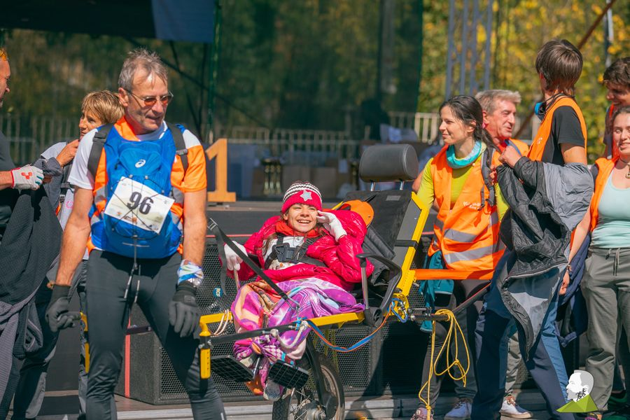

Ела и ти на старта в Тепе Джамборе ’25
наближава 21 юни и с него стартът на тазгодишното състезание „Джамборе тепе“.
ДВ първото му издание се включихме с три отбора.
"Тели бутай", "Бързай бавно", Ела с нас"
Тази година искаме отново да приемем предизвикателството застанем на старта.
Ние от фондация „Ела и Ти“ участваме в състезанието с отбори от доброволци и хора с увреждания, като преминаваме по трасето със специализирани колички.
Миналата година постигнахме забележително време.
Искаме и тази година да се впуснем по този начин в надпреварата.
Три отбора - три възможности!
Отбор "ТЕГЛИ-БУТАЙ"
с капитан Марио Никифоров кани отново доброволци с мотивация и физическа възможност за сформиране на отбор с носилка: "Тъй като предизвикателството е сериозно, особено ако целта ни е бързо преминаване по трасето, се обръщам към хора, любители на планинското бягане"
Обор "БЪРЗАЙ БАВНО" и "ЕЛА С НАС"
могат да се включат всички желаещи с добра физическа подготовка
опит в планинско бягане
издръжливи на планински преходи с положителна денивелация
На разположение са три колички с колело, с които искаме да започнем серизони тренировки от м. април 2025 г.
Очакваме ви! Нека сформираме нашия dream-team !
elaiti.com
#run&roll #ТеглиБутай #ЕлаиТиНаСтарта #ЕлаИТи #ComeYouToo #Start
Plovdiv, Bulgaria
Тепе Джамборе - маратон по спорт, култура и забавление
Plovdiv, Plovdiv
Рекреативно състезание по бягане, което води състезателите на пътешествие през всяко от 7-те исторически тепета.
Събитието се провежда с подкрепата на община Пловдив и е част от Културния календар на града за 2026 година.
